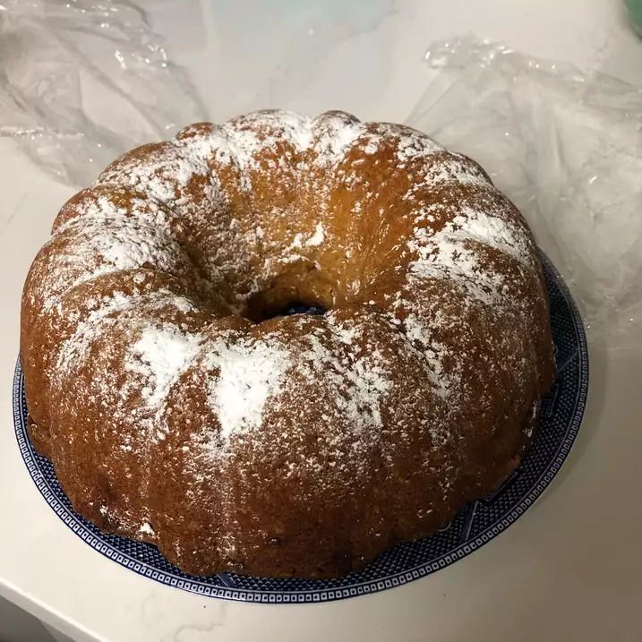

Ingredients
- 1 (18.25 ounce) package yellow cake mix
- 4 eggs
- ¾ cup vegetable oil
- ¾ cup cream sherry
- 1 teaspoon ground nutmeg
- 1 (3.5 ounce) package instant vanilla pudding mix
- ½ cup white sugar
- 1 tablespoon ground cinnamon
- 1 tablespoon unsweetened cocoa powder
Directions
- Preheat oven to 350 degrees F (175 degrees C). Oil the sides and bottom of a 10 inch Bundt cake pan. In a small bowl, mix cinnamon, sugar and cocoa. "Flour" the sides and bottom of the pan with the mixture, tap out the excess back into the cinnamon mixture.
- In a large bowl, combine the cake mix, eggs, oil, sherry, nutmeg and pudding mix. Beat until well blended. Pour half of the batter into the Bundt pan, sprinkle with half of the cinnamon sugar, cover with the remaining batter and finally, top with remaining cinnamon mixture.
- Bake at 350 degrees F (175 degrees C) for 45 minutes, or until toothpick inserted into cake comes out clean. Cool in pan for 10 minutes, then turn out onto a wire rack.
Nutrition Facts
Per Serving: 412 calories; protein 4.1g; carbohydrates 52.8g; fat 20.6g; cholesterol 62.9mg; sodium 514mg.